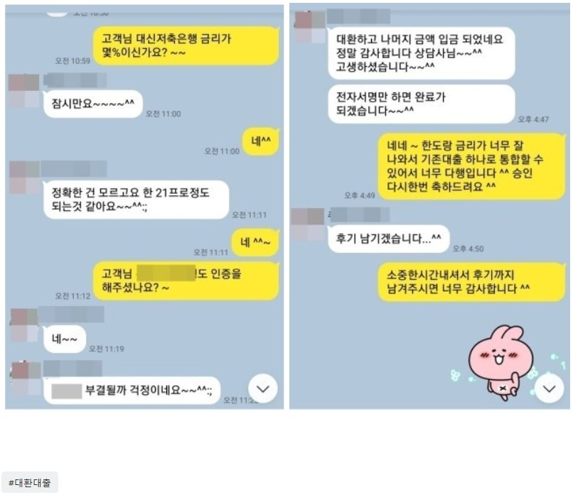

입사3개월 직장인 대환 및 추가자금 3000만원 승인사례!!!
안녕하세요~ 오늘은 제가 상담드린 주**고객님의 대출 사례를 안내해 드리겠습니다.
주** 고객님께서는 4대보험이 가입되어 있는 직장인이셨으며, 월소득은 280만원
정도 되셨습니다. 기대출은 국민은행 1160만원, 대신저축 1487만원(금리21%),
sbi저축 1138만원(금리19%)으로 기존 채무를 좀더 낮은 금리로 대환하고자 문의를 주셨습니다.
저는 상담 후 채무 통합상품으로 안내를 해드렸고, 이용중인 채무를 대환하는
조건으로 3000만원(금리14.8%) 가능하다는 결과를 안내받으셨습니다. 분산되어 있던 채무를
훨씬 낮은 금리 1건으로 통합할 수 있게 되어서 고객님도 매우 만족해 하셨습니다
아래는 저와 주**고객님의 카톡상담 내용 일부를 캡쳐한것이오니,
참고하시어 많은 도움 되셨으면 좋겠습니다. 감사합니다. ^^
